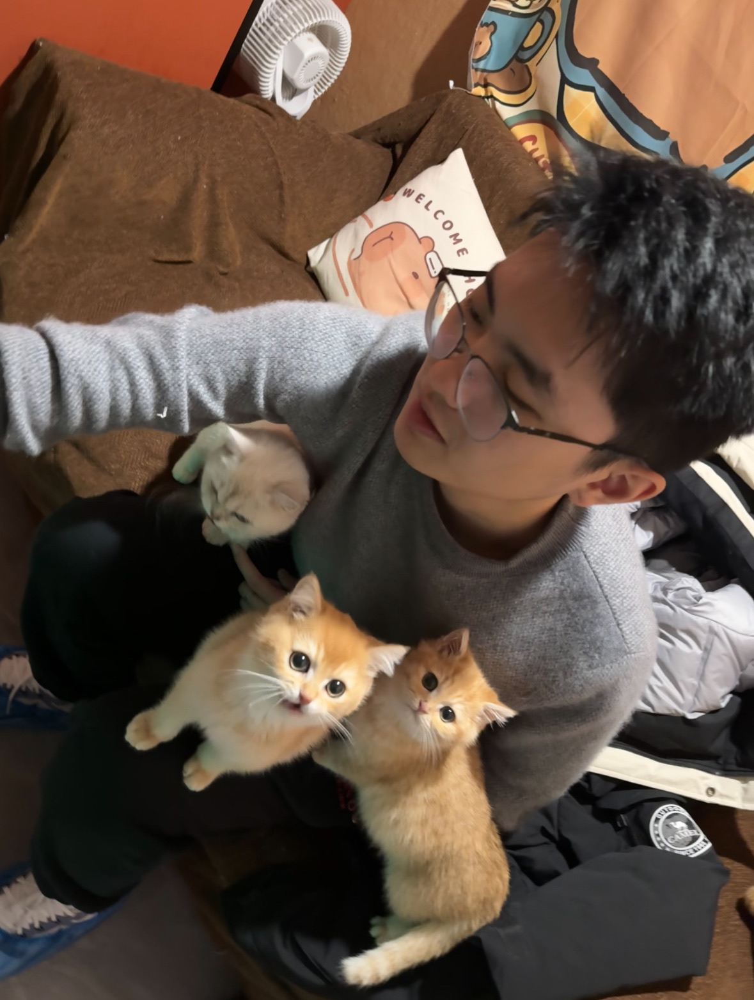

Shanghai Jiao Tong University
Yunuo Chen 陈予诺
Ph.D. student in Computer Science
I am a Ph.D. student at SJTU Media Lab, Shanghai Jiao Tong University, advised by Wen Gao, an Academician of the Chinese Academy of Engineering, and Prof. Guo Lu. I received my B.Eng. in Electrical and Computer Engineering from the UM-SJTU Joint Institute, Shanghai Jiao Tong University.
My research focuses on Visual Compression, AIGC and World Model.
News
- We released LensErase, a foundation model for object removal.
- Two papers were accepted to NeurIPS 2026.
- One paper was accepted to ECCV 2026.
- We released Lens, a foundation model for text-to-image generation.
- Two papers were accepted to CVPR 2026.
- Two papers were accepted to ICLR 2026.
- One paper was accepted to NeurIPS 2025.
- One paper was accepted to ICCV 2025 as an Oral presentation.
- One paper was accepted to ICLR 2024.
- One paper was accepted to ICML 2023.
Experience
Qingyun Program
Tencent IEG ARC Lab
Supervised by Honghao Chen.
Topic: World Model, World Action Model.
Research Intern
Microsoft Research Asia (MSRA)
Supervised by Fangyun Wei and Dong Chen.
Topic: lightweight text-to-image and image-editing foundation models.
Research Intern
StepFun (阶跃星辰)
Supervised by Wei Cheng.
Topic: multi-reference and many-to-many image generation.
Education
- Ph.D. in Computer Science, Shanghai Jiao Tong University
- B.Eng. in Electrical and Computer Engineering, UM-SJTU Joint Institute, Shanghai Jiao Tong University
- Undergraduate Minors: Data Science, Computer Science, and Global China Studies.
Publications
Selected first-author or representative works are highlighted below. Equal contribution is marked by *.
LensErase: A Foundation Model for Erase Anything
A mask-based foundation model for removing objects, text, watermarks, and associated effects, trained on LensErase-100M and refined with supervised fine-tuning and reinforcement learning.
Next-Frame Decoding for Ultra-Low-Bitrate Image Compression with Video Diffusion Priors
Reformulates generative image decoding as next-frame prediction from a compact anchor frame, using video diffusion priors for ultra-low-bitrate image compression.
Adaptive Learned Image Compression with Graph Neural Networks
Introduces GLIC, a graph-based learned image compression framework with dual-scale graphs and adaptive connectivity for content-adaptive redundancy modeling.
Content-Aware Mamba for Learned Image Compression
Builds a content-aware state-space model for image compression by combining content-adaptive token permutation with sample-specific global prior injection.
H3D-DGS: Exploring Heterogeneous 3D Motion Representation for Deformable 3D Gaussian Splatting
Proposes a heterogeneous 3D motion representation for deformable 3D Gaussian splatting that decomposes complex scene dynamics into distinct motion components.
Knowledge Distillation for Learned Image Compression
Develops a stage-wise modular distillation framework for learned image compression, reducing model complexity while preserving rate-distortion performance.
Lens: Rethinking Training Efficiency for Foundational Text-to-Image Models
Presents Lens, a 3.8B-parameter text-to-image model that matches or surpasses 6B+ models across benchmarks while using only ~19% of their training compute, through maximizing data information density and improving convergence with semantic VAE and strong language encoders.
CompactSplat: Spatially Adaptive Gaussian Distribution for Feedforward Scene Reconstruction
Bing He, Jingnan Gao, Yunuo Chen, Zhengxue Cheng, Rong Xie, Li Song, Wenjun Zhang
Backdoor Attacks under Lossy Compression: From Failure to Reactivation and Adaptation
Qian Li, Yunuo Chen, Yuntian Chen
SurfSplat: Conquering Feedforward 2D Gaussian Splatting with Surface Continuity Priors
Bing He, Jingnan Gao, Yunuo Chen, Ning Cao, Gang Chen, Zhengxue Cheng, Li Song, Wenjun Zhang
iMontage: Unified, Versatile, Highly Dynamic Many-to-many Image Generation
Zhoujie Fu, Xianfang Zeng, Jinghong Lan, Xinyao Liao, Cheng Chen, Junyi Chen, Jiacheng Wei, Wei Cheng, Shiyu Liu, Yunuo Chen, Gang Yu, Guosheng Lin
Neural Rate Control for Learned Video Compression
Yiwei Zhang, Guo Lu, Yunuo Chen, Shen Wang, Yibo Shi, Jing Wang, Li Song
Bayesian Neural Networks Avoid Encoding Complex and Perturbation-Sensitive Concepts
Qihan Ren, Huiqi Deng, Yunuo Chen, Siyu Lou, Quanshi Zhang
Preprints
Recasting DiT for Extreme Image Compression with Hierarchical Visual Priors
Recasts a pretrained Diffusion Transformer as a deterministic one-step decoder for extreme image compression, guided by hierarchical visual priors.
VibeEdit: Image Editing with Canvas Instructions
Enables image editing through spatial marks and short notes placed directly on the image, supporting object addition, removal, replacement, attribute changes, and movement.
FreeStyle: Free Control of Style-Content Dual-Reference Generation from Community LoRA Mining
Mines community LoRAs to build style-content reference data and supports controllable dual-reference generation with reduced content leakage.
APT: Feedback-Driven Agentic Post-Training for Text-to-Image Generation
Automates text-to-image post-training through a feedback loop that evaluates model capabilities, diagnoses weaknesses, and adapts reinforcement learning data.
Services
- Conference Reviewer: CVPR 25/26, ICCV 25, ICLR 25/26/27, ECCV 26, ICML 26, NeurIPS 25/26, AAAI 26/27, BMVC 26
- Journal Reviewer: IEEE TIP, IEEE TCSVT, ACM TOMM, IEEE Signal Processing Magazine
- Workshop Organizer: VCIP 2025 Ultra-Low Bitrate Video Compression Challenge
Honors and Awards
- Outstanding Graduate, Shanghai Jiao Tong University
- Yu Liming Scholarship, UM-SJTU Joint Institute
- Undergraduate Outstanding Scholarship, UM-SJTU Joint Institute